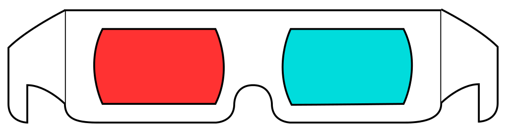

Diese Seite wurde erstellt um zu testen ob ein Schielen vorliegt. Um den Test durchzuführen, benötigen Sie eine Brille mit zwei verschiedenen Farben, wie z.B. eine 3D-Brille.
Setzen Sie nun die passende Brille auf und schauen Sie sich die Farben unten an, Sie sollten die rote Farbe mit dem linken Auge nicht sehen können und muss unsichtbar sein, wenn nicht, passen Sie die Farbe an. Das gleiche Spiel mit dem rechten Auge.
Nachdem Sie die Farben angepasst haben, positionieren Sie sich etwa 30 cm vom Bildschirm entfernt. Halten Sie den Kopf still und bewegen Sie nur die Augen, um die 6 Kreuze mit dem Zeiger in der Mitte zu treffen. Danach können Sie die Brille abnehmen, um die Ergebnisse zu sehen.